Domain Driven Design
Software Process Engineering
Giovanni Ciatto — giovanni.ciatto@unibo.it
Compiled on: 2024-12-21 — printable version
Motivation and Context
Why a structured design process?
-
You know programming, in many programming languages
-
You know about object-oriented programming and design patterns
-
You know about software architectures and design principles
-
You know about software engineering best practices
What’s the criterion to choose if and when to adopt languages / patterns / architectures / principles / practices?
Recommended workflow
Problem $\xrightarrow{\color{red}analysis}$ Model $\xrightarrow{\color{red}design}$ Architecture $\xrightarrow{implementation}$ Solution
- yet, how to derive the model?
Why Domain Driven Design?
- Here we present domain-driven design (DDD)
- one of many approaches to software design
- It consists of principles, best practices, and patterns leading design
- unified under a common philosophy
- focus is on the design workflow, other than the result
- Major benefits:
- it stresses adherence to the problem at hand
- it focuses on delivering a business-tailored model
- and, therefore, a business-tailored solution
- it harmonises communication among managers, technicians, and users
- it stresses the production of maintanable and extensible software
Main notions of DDD
What is the domain?
- Definition of domain:
- a well-established sphere of knowledge, influence or activity
- the subject area to which the user applies the software
- Remarks:
- focus is on how users and experts perceive the domain
- focus is not on how developers perceive the domain
- Examples of domains and the contexts composing them
- some university (department, faculty, HR, etc.)
- some given company (manufacturing, marketing, HR, etc.)
- linear algebra (matrices, complex numbers, polynoms, etc.)
- machine learning (classification, regression, feature selection, etc.)
DDD Philosophy (pt. 1)
-
Software will represent a solution to a problem in some business domain
- it should be modelled & implemented to match that domain
- i.e. modelling should elicit the key aspects of a domain, possibly by interacting with experts
- i.e. design and implementation should mirror the domain
- it should be modelled & implemented to match that domain
-
Words do not have meaning per se, but rather w.r.t. a domain
- i.e. the same word may have different meanings in different domains
- each domain comes with a particular language characterising it
- software components (interfaces, classes, etc.) should be named after that language
- interaction with experts is essential to identify a domain’s language
DDD Philosophy (pt. 2)
- Software should stick to the domain, at any moment
- archiecture and implementation should favour adherence to the domain
- in spite of their evolution / modification
- archiecture and implementation should favour adherence to the domain
-
Functionalities, structure, and UX should mirror the domain too
- using the libraries should be natural for developers
- UX should be natural for users
as both developers and users are (supposed to be) immersed in the domain
Overview of main notions
-
Domain: the reference area of knowledge
-
Context: a portion of the domain
-
Model: a reification of the domain in software
-
Ubiquitous Language: language used by domain experts and mirrored by the model
The Domain
A well established sphere of knowledge, influence or activity
- e.g. some university (department, faculty, HR, etc.), linear algebra, etc.
Contexts
A portion of the domain with a clear boundary:
- relying on a sub-set of the concepts of the domain
- where words/names have a unique, precise meaning
- clearly distinguishable from other contexts
- e.g. departments, divisions, complex numbers, etc.
Domain vs. Context

The domain Model
Set of software abstractions mapping relevant concepts of the domain
- e.g. Java/Kotlin/Scala projects, packages, interfaces, classes, records, methods, etc.
The Ubiquitous Language
- A language structured around the domain model
- used by all people involved into the domain
- which should be used in the software
- in such a way that their semantics is preserved
-
underlying assumption:
- different people call the same things differently
- especially when they come from different contexts
-
commonly reified into a glossary of terms
-
used to name software components
Conceptual Workflow
-
Identify the domain, give a name to it
-
Identify the main contexts within the domain, giving them names
- possibly, by interacting with experts
-
Identify the actual meaning of relevant words from the domain, and track them into a glossary
-
possibly, by interacting with experts
-
without assuming you already know the meaning of words
- i.e. do not rely on (your) common sense
-
keep in mind that the meaning of words may vary among contexts
- homonyms: similar names, different meanings
- synonyms: different names, similar meanings
-
-
Adhere to the language, use it, make it yours
- especially when talking about the domain / model / software
- design/sketch code mirroring the language
-
Draw a context map tracking
- the main contexts and their junctions
- words whose meaning varies across contexts
-
Model the software around the ubiquitous language
- rule of thumb: 1 concept $\approx$ 1 interface
Example of context map
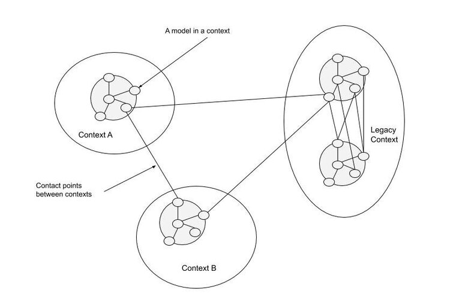
DDD Building Blocks
Towards building blocks
Domain
- Concept
- instance
$\xrightarrow{modelling}$
Model
- Type
- object
- Each concept from each context shall become a type in the model
- type $\approx$ class, interface, structure, ADT, etc.
- depends on what the programming language has to offer
- type $\approx$ class, interface, structure, ADT, etc.
- Use building blocks as archetypes
- let them guide and constrain your design
Workflow
(continued)
-
Chose the most adequate building block for each concept
- depending on the nature of the concept
- … or the properties of its instances
-
The building block dictates how to design the type corresponding to the concept
- objects in OOP are shaped by types
-
The choice of building block may lead to the identification of other concepts / models
- e.g. entities may need value objects as identifiers
- e.g. entities may need repositories to be stored
- e.g. entities may need factories to be created
- e.g. aggregates may be composed by entities or value objects
Building blocks (overview)
-
Entity: objects with an identifier
-
Value Object: objects without identity
-
Aggregate Root: compound objects
-
Domain Event: objects modelling relevant event (notifications)
-
Service objects: providing stateless functionalities
-
Repository: objects providing storage facilities
-
Factory: objects creating other objects
Building blocks (concept)
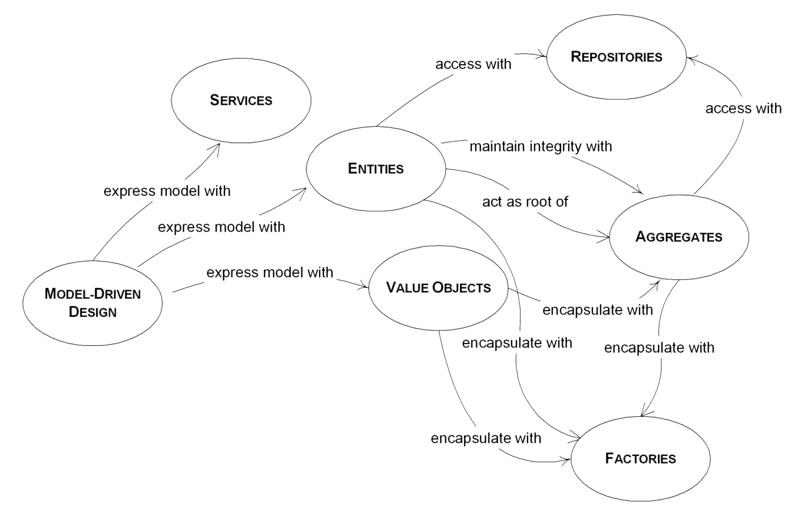
Entities vs. Value Objects
Genus-differentia definition:
- genus: both can be used to model elementary concepts
- differentia: entities have an explicit identity, value objects are interchangeable
Quick modelling examples
Classroom
-
Seats in classroom may be modelled as value-objects
-
Attendees of a class may be modelled as entities
Seats on a plane
-
Numbered seats $\rightarrow$ entities
-
otherwise $\rightarrow$ value objects
Entities vs. Value Objects (constraints)
Value Objects
- Identified by their attributes
- equality compares attributes alone
- Must be stateless $\Rightarrow$ better to use immutable design
- read-only properties
- lack of state-changing methods
- May be implemented as
- structures in .NET
- data classes in Kotlin, Scala, Python
- records in Java
- Must implement
equals()andhashCode()on JVM- implementation must compare the objects’ attributes
Entities vs. Value Objects (constraints)
Entities
- They have an inherent identity, which never changes during their lifespan
- common modelling: identifier attribute, of some value type
- equality compares identity
- Can be stateful $\Rightarrow$ may have a mutable design
- modifiable properties
- state-changing methods
- May be implemented via classes in most languages
- Must implement
equals()andhashCode()on JVM- implementation must compare (at least) the objects’ identifiers
Entities vs. Value Objects (example)
interface Customer { + CustomerID getID() .. + String getName() + void setName(name: String) + String getEmail() + void setEmail(email: String) } note left: Entity
interface CustomerID { + Object getValue() } note right: Value Object
interface TaxCode { + String getValue() } note left: Value Object
interface VatNumber { + long getValue() } note right: Value Object
VatNumber -d-|> CustomerID TaxCode -d-|> CustomerID
Customer *-r- CustomerID
Aggregate Root
Definition
-
A composite entity, aggregating related entities/value objects
-
It guarantees the consistency of the objects it contains
-
It mediates the usage of the composing objects from the outside
- acting as a façade (à la GOF)
-
Outside objects should avoid holding references to composing objects
Aggregate Root (constraints)
-
They are usually compound entities
-
They can be or exploit collections to contain composing items
- they may leverage on the composite pattern
-
May be better implemented as classes in most programming languages
-
Must implement
equals()andhashCode()on JVM (as any other entity)- implementation may take composing items into account
-
Components of an aggregate should not hold references to components of other aggregates
- that’s why they are called aggregate roots
- notable exception: references to identifiers of other aggregates

Aggregate Root (example)
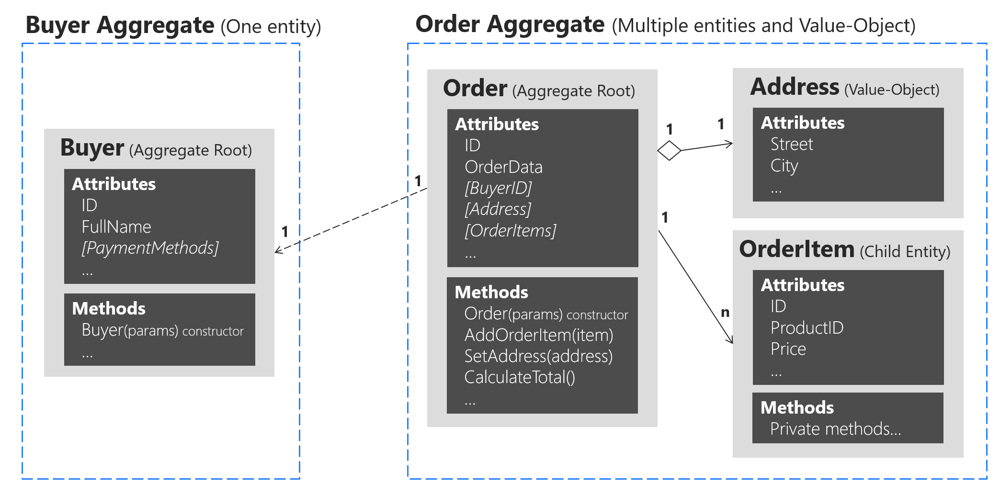
(notice the link between Order and Buyer implemented by letting the Order hold a reference to the BuyerID)
Factories (definition)
Objects aimed at creating other objects

Factories (details)
Purpose
-
Factories encapsulate the creation logic for complex objects
- making it evolvable, interchangeable, replaceable
-
They ease the enforcement of invariants
-
They support dynamic selection of the most adequate implementation
- while hiding the actual implementation choice
Remarks
- DDD’s notion of factory is quite loose
- DDD’s Factories $\supset$ GOF’s Factories $\cup$ Builders $\cup$ …
Factories (constraints)
-
They are usually identity-less and state-less objects
- recall the abstract factory pattern
-
May be implemented as classes in most OOP languages
-
Provide methods to instantiate entities or value objects
-
Usually they require no mutable field/property
-
No need to implement
equals()andhashCode()on JVM
Factories (example)
interface CustomerID
interface TaxCode
interface VatNumber
interface Customer
Customer “1” *– “1” CustomerID
VatNumber -u-|> CustomerID TaxCode -u-|> CustomerID
interface CustomerFactory { + VatNumber computeVatNumber(String name, String surname, Date birthDate, String birthPlace) .. + Customer newCustomerPerson(TaxCode code, String fullName, string email) + Customer newCustomerPerson(String name, String surname, Date birthDate, String birthPlace, String email) .. + Customer newCustomerCompany(VatNumber code, String fullName, String email) } note bottom of CustomerFactory
- method for creating VAT numbers
- methods for creating person customers
- methods for creating company customers end note
CustomerFactory -r-> VatNumber: creates CustomerFactory -u-> Customer: creates
Repositories (definition)
Objects mediating the persistent storage/retrieval of other objects

Repositories (details)
Purpose
- Hiding (i.e. be backed by) some database technology
- Possibly realising some sort of object-relational mapping (ORM)
- Storing / retrieving aggregate roots as wholes
- Supporting CRUD operations on aggregate roots
- Create, Read, Update, Delete
Remarks
- They may exploit factories for turning retrieved data into objects
- If properly engineered, avoids lock-in effect for database technologies
- Design & implementation may require thinking about:
- the architecture,
- the infrastructure,
- the expected load,
- etc.
Repositories (constraints)
-
They are usually identity-less, stateful, and composed objects
- state may consist of the stored objects
- state may consist of DB connections
-
May be implemented as classes in most OOP languages
-
Provide methods to
- add, remove, update aggregate root entities
- select and return one or more entities, possibly in a lazy way
- this should return
Iterable,Collection, orStreamon JVM
- this should return
-
Non-trivial implementations should take care of
- enforcing consistency, in spite of concurrent access
- support complex transactions
Repositories (example)
interface CustomerID
interface Customer
Customer “1” *-u- “1” CustomerID
interface CustomerRegistry {
+ Iterable
CustomerRegistry “1” o–> “N” Customer: contains CustomerRegistry –> CustomerID: exploits
Services
Functional objects encapsulating the business logic of the software
e.g. operations spanning through several entities, objects, aggregates, etc.
Purpose
- Reifying control-related aspects of the software
- Wiring aggregates, entities, and value objects together
- Exposing coarse-grained functionalities to the users
- Providing a façade for the domain
- Make the business logic evolvable, interchangeable, replaceable
Remarks
- Services may be exposed via ReSTful API
- Should be designed keeping current uses cases into account (i.e. design services to be purpose-specific)
- entities/objects should support future use cases, too (i.e. design entities/objects to be general purpose)
Services (constraints)
-
They are usually identity-less, stateless objects
-
May be implemented as classes in OOP languages
- or bare functions in functional languages
-
Commonly provide procedures to do business-related stuff
- e.g. a particular operation…
- … concerning some particular aggregate root
- … which does not support it directly through its methods
- … because the operation is use-case specific
- e.g. proxying an external service
- e.g. a complex operation involving several aggregates, repositories, factories, etc.
- e.g. a particular operation…
-
Non-trivial implementations should take care of
- supporting concurrent access to the service’s facilities
- exposing domain events to the external world
Services (example)
interface OrderManagementService { + void performOrder(Order order) }
interface Order { + OrderID getId() + Customer getCustomer() + void setCustomer(Customer customer) + Date getTimestamp() + void setTimestamp(Date timestamp) + Map<Product, long> Amounts getAmounts() }
interface OrderID
interface Customer
interface Product
interface OrderStore
Order “1” *-r- “1” OrderID Order “1” *-d- “1” Customer Order “1” *-u- “N” Product OrderStore “1” *– “N” Order
OrderManagementService ..> Order: handles OrderManagementService ..> OrderStore: updates
note bottom of OrderStore: repository note top of Order: entity note right of OrderID: value object note right of Product: entity note right of Customer: entity note top of OrderManagementService: service
OrderID -u[hidden]- Product OrderID -d[hidden]- Customer
Domain Events (definition)
A value-like object capturing some domain-related event
(i.e., an observable variation in the domain, which is relevant to the software)
- actually, only the event notification/description is reified to a type
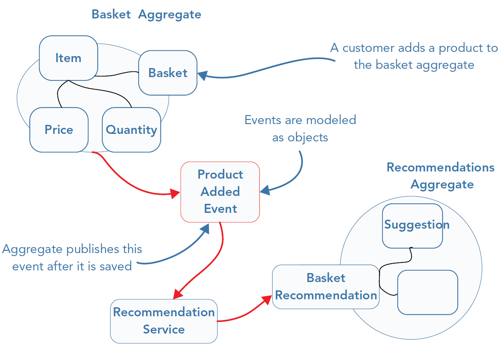
Domain Events (details)
Purpose
- Propagate changes among portions of the domain model (e.g. contexts, aggregates, entities, etc.)
- Record changes concerning the domain
Remarks
-
Strong relation with the observer pattern (i.e. publish-subscribe)
-
Strong relation with the event sourcing approach (described later)
-
Strong relation with the CQRS pattern (described later)
Domain Events (constraints)
-
They are usually time-stamped value objects
-
May be implemented as data-classes or records
-
They represent a relevant variation in the domain
- e.g. a change in the state of some entity / repository
-
Event sources & listeners shall be identified too
- who is generating the event?
- who is consuming the event?
-
Infrastructural components may be devoted to propagate events across contexts
- e.g. a message broker, a message queue, etc.
-
[Teacher’s Suggestion]: prefer neutral names for event classes in the model
- e.g.
OrderEventArgsinstead ofOrderPerformedEventArgs - e.g.
OrderEventinstead ofOrderPerformedEvent - the reason: the same OOP type may be used to represent different events:
- e.g.
orderIssued,orderConfirmed,orderCancelled, etc.
- e.g.
- e.g.
Domain Events (example)
interface OrderManagementService { + void performOrder(Order order) .. + void notifyOrderPerformed(OrderEventArgs event) }
interface OrderEventArgs { + OrderID getID() + CustomerID getCustomer() + Date getTimestamp() + Dictionary<ProductID, long> getAmounts() }
interface OrderID
interface CustomerID
interface ProductID
OrderEventArgs “1” *-u- “1” OrderID OrderEventArgs “1” *-r- “1” CustomerID OrderEventArgs “1” *-d- “N” ProductID
OrderEventArgs .. OrderManagementService
note left of OrderEventArgs: domain event note left of OrderID: value object note left of ProductID: value object note right of CustomerID: value object note right of OrderManagementService: service
DDD Patterns
Towards DDD patterns
Further notions involving contexts
-
Bounded Context: enforce a model’s boundaries & make them explicit
-
Context Map: providing a global view on the domain and its contexts
Actual definitions
Context Boundary
The boundary of a context and its software model should be explicit. This is helpful from several perspectives:
- technical (e.g., dependencies among classes/interfaces)
- physical (e.g., common database, common facilities)
- organizational (e.g. people/teams maintaining/using the code)
Context Map
A map of all the contexts in a domain and their boundaries
- and their points of contact
- e.g. their dependencies, homonyms, false friends, etc.
- providing the whole picture of the domain
Example of bounded context map

Bounded Contexts & Context Maps (best practices)
-
Clearly identify & represent boundaries among contexts
-
Avoid responsibility diffusion over a single context
- one responsible person / team for each context
-
Avoid changes in the model for problems arising outside the context
- rather, extend the domain by creating new contexts
-
Enforce context’s cohesion via automated unit and integration testing
- to be (re)executed as frequently as possible
Model integrity problem
How to preserve the integrity of the model?
-
As the domain evolves, the software model should evolve with it
- in order to maintain the coupling
-
Yet, the domain rarely changes as a whole
- more commonly, it changes in a context-specific way
-
Contexts-are bounded, but not isolated
- so are models, which may depend on each other
-
Changes to a context, and its model may propagate to other context / models
Domain / model changes are critical and should be done carefully
Model integrity patterns
- Shared kernel: sharing a common model among contexts
- Customer–supplier: the consumer model’s team requests changes in the supplier model
- Conformist: one model’s team reacts to changes of some model they depend on
- Anti-corruption layer: a model’s team isolates itself from another model
Purposes
-
Preserve the integrity of the model w.r.t. the domain
-
Minimise the potential impact / reach of changes
- each context should be as independent as possible
- each change affect as few contexts as possible
Model integrity patterns (background, pt. 1)
- Context maps highlight relations among contexts
- yet, not all relations are equal, nor symmetric
Model integrity patterns (background, pt. 2)
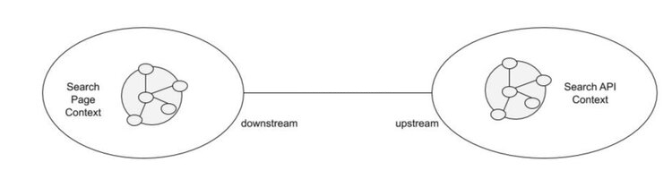
Each relation among 2 contexts usually involves 2 ends/roles:
- upstream end, i.e. the one providing functionalities
- downstream end, i.e. the one consuming functionalities
- the downstream depends upon the upstream, but not vice versa
Integration among contexts $\leftrightarrow$ interaction among teams
- several strategies may be employed, depending on
- mutual trust* among teams
- ease of communication/cooperation among teams
- technical / organizational / administrative / legal constraints
*trust $\approx$ willingness to collaborate + seek for stability
Shared Kernel
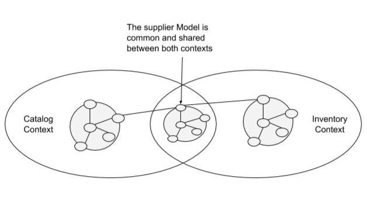
-
Best when: multiple contexts share the same team / organization / product
-
Key idea: factorise common portions of the model into a shared kernel
-
Upstream and downstream collaborate in designing / developing / maintaining the model
- they are peers
-
Keeping the kernel as small as possible is fundamental
Customer–Supplier
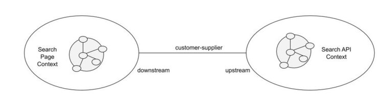
-
Best when:
- multiple teams
- mutual trust
- good communication
-
Key idea:
- upstream acts as supplier, downstream acts as customer
- both sides collaborate to maximise integration among their models
- and interoperability among their software
-
Customers may ask for features, suppliers will do their best to provide them
-
Suppliers shall warn before changing their model
Conformist
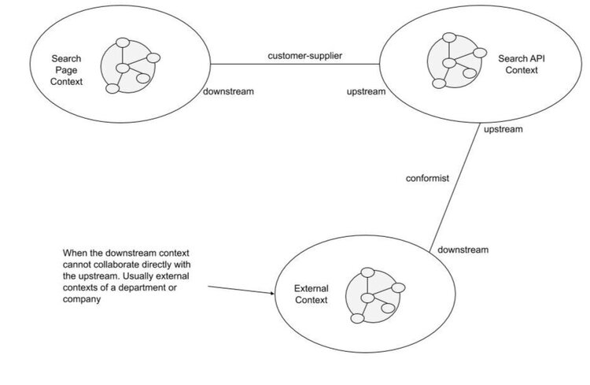
-
Best when:
- multiple teams
- poor communication / different pace
- some trust
-
Key idea: downstream must conform to the upstream, reactively
- adapting their model accordingly
- whenever the upstream’s one changes
Anti-corruption layer
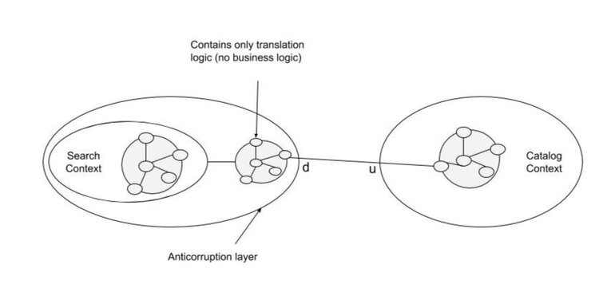
-
Best when:
- multiple teams
- poor communication
- poor trust
-
If upstream cannot be trusted, and interaction is pointless…
- e.g. legacy code, poorly maintained library, etc.
-
… downstream must defend from unexpected / unanticipated change
-
The upstream’s model is then reverse engineered & adapted
- e.g. often, repository types are anti-corruption layers for DB technologies
Layered Architecture
Layered Architecture (disclaimer)
-
DDD does not enforce a particular architecture
-
Any is fine as long the model is integer
-
Layered architectures are well suited to preserve models’ integrity
-
Here we focus on the hexagonal architecture, a particular case of layered architecture
- well suited to DDD
Hexagonal architecture (concept)
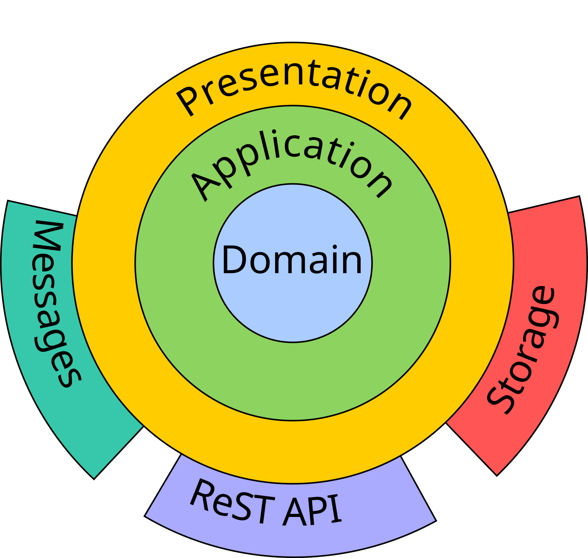
- outer layers depend on innermost ones
- the vice versa is not true
Hexagonal architecture (explanation)
-
Domain layer: contains the domain model (entities, values, events, aggregates, etc.)
- must support a wide range of applications
- has no dependency from any other layer
-
Application layer: contains services providing business logic
- supports a particular use case via services
- depends on the domain layer
-
Presentation layer: provides conversion facilities to/from representation formats
- e.g. JSON, BSON, XML, YAML, XDR, Avro, HTML, etc.
- depends on the domain layer (and, possibly, on the application layer)
- e.g. JSON, BSON, XML, YAML, XDR, Avro, HTML, etc.
-
Storage layer: supports persistent storage/retrieval of domain data
- this is where repositories are implemented
- may involve some DB technology
- depends on the domain layer (and, possibly, on the presentation layer)
-
Interface layers (e.g. ReST API, MOM, View): let external entities access the software
- via a GUI, or via some remote interface such as HTTP
Enforcing the architecture in the code
-
Layering may be enforced in the code
-
By mapping layers into modules
- module $\approx$ packaging unit
- e.g. Gradle sub-projects, Maven modules, .NET assemblies, etc.
- each module having its own build dependencies
- module $\approx$ packaging unit
Advanced aspects of DDD
Event sourcing (preliminaries)
- Whenever there is a mutable entity …
- … whose state evolution over time must be tracked …
- … state transitions can be memorised in 2 ways:
- one may track the current state
- or the flow of variations
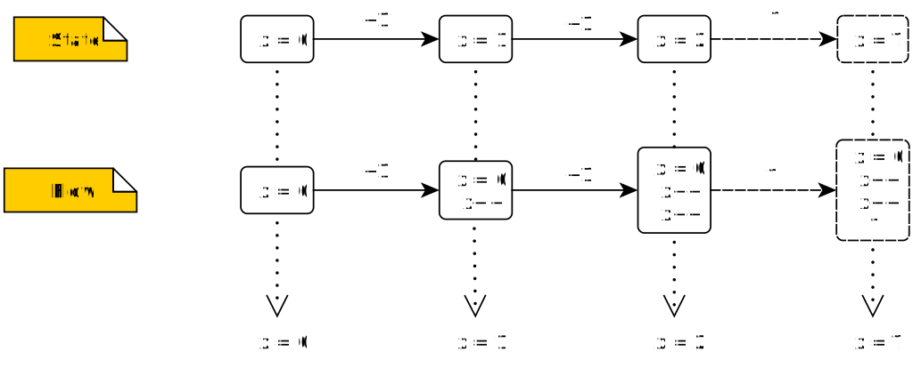
Event sourcing
A pattern where domain events are reified into time-stamped data and the whole evolution of a system is persistently stored
- perfect match with DDD as domain events are first-class citizens
Event sourcing (pros & cons)
Benefits
-
Historical data can be analysed, to serve several purposes
- e.g. predictive maintenance, optimization, analyse & anticipate faults
-
Past situations can be replayed
- e.g. which improves debugging, enables measurements
-
Enables complex event detection & reaction
-
Enables CQRS (described later)
Limitations
- A lot of data is generated and must be stored, which costs space
- Reconstructing the (current) state costs time
Command–Query Responsibility Segregation (CQRS)
-
Advanced pattern for building highly-scalable applications
-
It leverages upon event sourcing and layered architecture…
-
… to deliver reactive, eventual-consistent solutions where:
- contexts boundaries can be easily enforced
- single responsibility principle is applied extensively
CQRS definition
Split the domain and application layers to segregate read/write responsibilities
-
Read model (a.k.a. view or query model)
- accepts queries aimed at observing the state of the system
-
Write model (a.k.a. command model)
- accepts commands aimed at altering the state of the system
CQRS concept
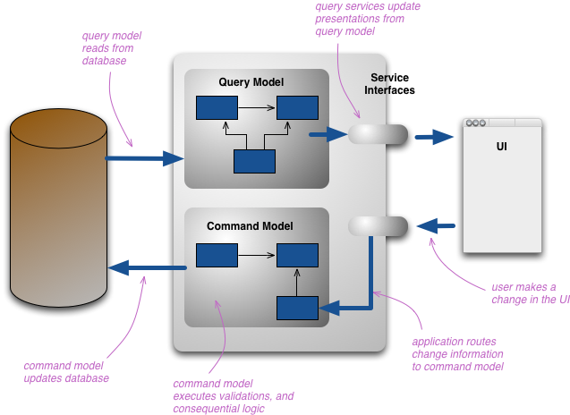
CQRS workflow (writing)
Whenever users are willing to perform an action into the system:
- they create a command and forward it to the write model
- i.e. an object describing a variation to be applied to some domain aspect
- the command is possibly validated & stored onto some database
- an ad-hoc database is available in the model for storing commands
CQRS workflow (reading)
Whenever users are willing to inspect/observe the system at time $t$:
- they perform a query on the read model
- asking for the state of the system at time $t$
- e.g. $t$ $\equiv$ now
- commands up to time $t$ are assumed to be reified when reading
- a snapshot of the system state at time $t$ is returned to users
CQRS – When are commands reified?
Reification: is the process of computing the state of the system at time $t$ by applying of commands recorded up to time $t$
-
If queries and commands are stored on different databases
- reification implies updating the query database
- the query database should be read-efficient
- the commands database should be write-efficient
-
Several, non-mutually-exclusive strategies:
- eager: commands are reified as soon as they are received
- pull: commands are reified upon reading queries
- push: commands are reified in background, periodically
Exercises
Repository: https://github.com/unibo-spe/ddd-exercise, branch exercise
(solutions on branch master)
Exercise 1 – Simple Store (pt. 1)
A simple domain keeping track of: customers, products, and orders.
Customers
-
Customers can either be companies or persons
-
Companies are identified by a VAT number
-
Persons are identified by tax codes
-
In any case a name and email are recorded for each customer
-
Both the name and email may vary over time
Products
-
Products are identified by name and type/category
-
They have a nominal price, expressed using some currency
-
The availability of each product is tracked as well
-
Both the price and the available quantity may vary over time
Exercise 1 – Simple Store (pt. 2)
Money and exchange rates
-
Money is represented by a decimal value and a currency
-
Currencies are represented by a name, a symbol and an acronym
- e.g. Euro, EUR, €
- e.g. USA Dollar, USD, $
-
Exchange rates keep track of the conversion rate
- from a source currency
- to a destination currency
- in a particular moment
-
Information about exchange rates can be attained from the Internet
-
We can compute the price of each product, in any currency, at any moment
Exercise 1 – Simple Store (pt. 3)
Orders
-
Orders are identified by a serial number
-
They keep track of the many products ordered by a customer
- and the amount of copies ordered for each product
-
Also, orders keep track of when they have been performed
-
All such information may be modified before the order is delivered
-
When a new order is registered, many actions should be performed in reaction
-
It must be possible to compute the actual total price of an order
- in a particular moment, using a particular currency
Exercise 1 – Simple Store (pt. 4)
TO-DO
- Read informal domain description
- Identify the main domain concepts composing the ubiquitous language
- Model the domain as Java types (classes or interfaces)
- the model should include entities, value objects, repositories, factories, and services
- Structure the Java types according to some module structure compliant with hexagonal architecture
- i.e. put code into either the
domainorapplicationmodules
- i.e. put code into either the
- Sketch tests and, then, implementation for at least one
- entity
- value object
- factory
- repository
- value object
Exercise 2 – Trivial CQRS (pt. 1)
- Very simple repository type: the
Counter - It contains 1
longnumber, initially set to0 - The value may be read or changed arbitrarily
- Whenever the value changes, a new domain event is published, of type
Variation - However, the repository only memorises the current value of the counter
Exercise 2 – Trivial CQRS (pt. 2)
TO-DO
- Switch the design towards event sourcing, by memorising variations instead of snapshots.
- Implement the CQRS pattern by splitting the repository into 2 parts:
- a write-model for storing variations
- a read-model for retrieving a snapshot of the counter’s value in a given moment
In practice:
- provide implementations for the
CounterReaderandCounterWriterinterfaces - optionally, test those implementations
Exercise 3 – Anti corruption layer (pt. 1)
-
Very simple domain:
Tables- i.e. 2-D containers of
Rows… - … where each row contains one or more
Stringvalues
- i.e. 2-D containers of
-
Functionalities for CSV import/export are missing and need to be implemented via third-party libraries
- Apache Commons CSV
- Guide here: https://www.baeldung.com/apache-commons-csv
- OpenCSV
- Guide here: https://www.baeldung.com/opencsv
- Apache Commons CSV
Exercise 3 – Anti corruption layer (pt. 2)
TO-DO
- Extend the model of our domain with new interfaces supporting CSV parsing / writing functionalities
- Design the interfaces so that they are agnostic of the third-party libraries
- without corrupting the domain model with library-specific types
- Provide implementations for the interfaces, using one of the two libraries
- Sketch tests for the implementations
- Provide implementations for the interfaces, using the other library
- Use the same tests as above to prove the two implementations work the same way